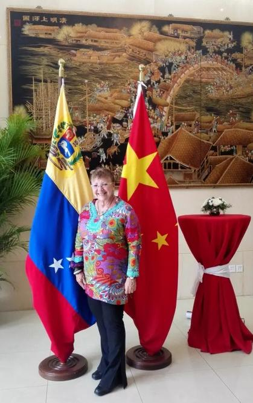
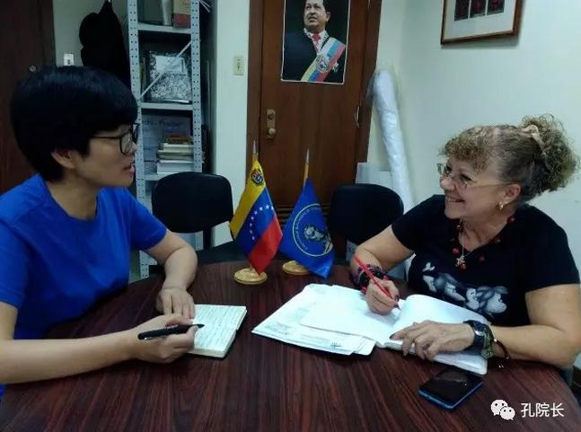
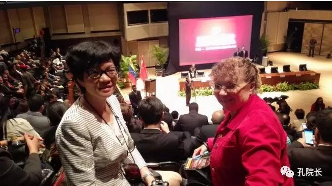
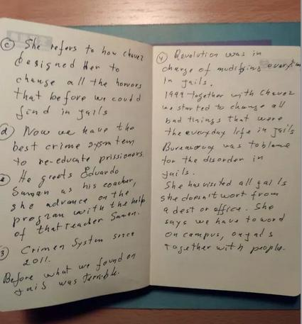
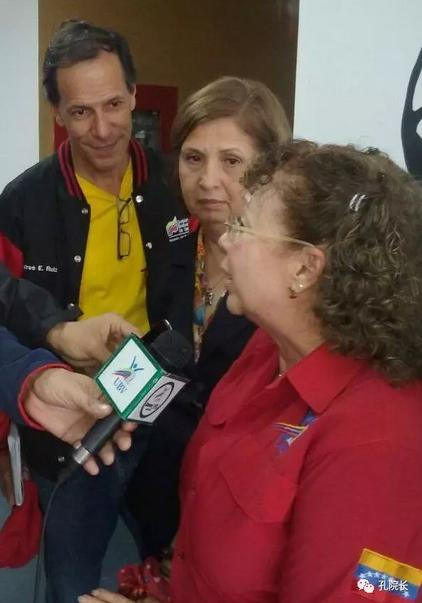
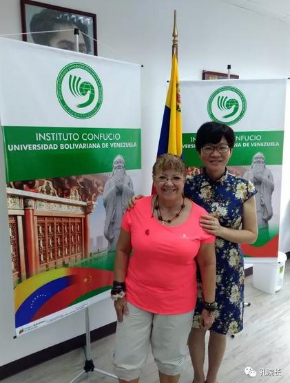

每日一篇——院长风采/ 举世无双的委内瑞拉玻利瓦尔大学孔子学院外方院长
 624
624
来源：原创 作者：沈菊芬
2016年12月，委内瑞拉玻利瓦尔大学校长Maryann Hanson约我谈孔子学院外方院长的人选时，我委婉提出三个要求：热爱中国文化，身体健康；懂英语，有管理能力；年龄不能太大，在玻利瓦尔大学有影响力。
经过一个月的物色，开学第一周，校长通知我有一人选很合适，先做代理院长。那天下午我在校长办公室第一次见到 Esperanza Aquerreta: 个子偏矮，微胖，年龄也超出我的预想，那一周正好她脚崴了，走路一瘸一拐，给了我一个大大的委内瑞拉式拥抱。第一次正式见面，尽管我表现的也很得体，但我心里一阵失落，孔子学院外方院长的外貌与我心目中委内瑞拉美女的形象相差太远了。
好在Esperanza Aquerreta能说一口流利的英语（她年轻时在伦敦学习过四年英语）。我也很清楚自己的劣势: 不懂所在国的语言（西班牙语），需要她来包容、配合、帮助我，那就先这样吧！

五个月过去了，上周校长和计划部的官员问我，Shen, Esperanza Aquerreta的工作怎么样？我马上回答到，“我非常满意她的工作，现在我可不想换人了”。这真是我的心里话。
知微见著，日久见人心。Esperanza Aquerreta是个乐观、心胸宽广、善于交流的人。她的一言一行告诉我她具有什么样的品格：乐观的人开朗、心胸宽广的人豁达、善于交流的人幽默。我看到的Esperanza Aquerreta是这样的一个人:

一、神采奕奕， 精力健旺
1952年出生的Esperanza Aquerreta，除了担任孔子学院的外方院长，还兼任委内瑞拉玻利瓦尔大学语言中心协调员，委内瑞拉玻利瓦尔大学社会教育中心主任等，也要给研究生授一门课（战略科学的发展）。
她就像一台充满能量的小“发动机”。她的一天通常是这样安排的：早上4：30起床，整理家务，准备好丈夫、自己和90岁母亲的午饭；6：00-7：30 外出跑步；9：00前开车到达玻利瓦尔大学，开始一天繁忙的工作：有行政，教学，社会工作…..晚上9点休息睡觉。我发给她的邮件，她都是清晨及时回复的。上班时间我俩几乎能天天碰面，但一般不超过30分钟，我把需要她知情、协助办理的孔子学院事务1,2,3…很快告诉她，只要在她能力范围内的事，她总是迅速去办理或找人解决问题，很少拖（她深知中国人讲究效率）。
让我心疼的是: 来我办公室商量事时，她经常喘着气说“Ya va! Ya va!”（稍等！） ，因为楼上楼下奔波; 我经常提醒她悠着点，别太累! 开玩笑说“你不是委内瑞拉人，你像中国人！”她听了总是哈哈大笑。她充沛的精力与她保持合理的作息和生活极有规律密切相关。

Esperanza Aquerreta非常热爱中国文化，2011年她去过中国一次:北京、上海、西安，至今说起那趟旅行，她都眉飞色舞，夸张的表情，丰富的肢体语言尽显可爱，特别是提到中国美食（ESPERANZA伴流口水状），她向往下次再有机会去中国。她经常在各种场合，语重心长地告诉孔子学院的学生们要学习中国人的美德：自律、勤奋、有条理、诚实、有效率等。尽管很忙，每周六下午她也与学生一起学习汉语，很少请假，她要以身作则学习中国人的自律精神。

二、热情爽朗，左膀右臂
在玻利瓦尔大学举办的活动上，哪里有Esperanza，哪里就会有我! 她会热情充当我的司机、翻译及语言私教，带我去见部长、校长、财务处长、教务处长、信息中心主任…..只要是与文化教育有关的活动，她都邀请我一起参加，但委内瑞拉人说西班牙语的速度飞快，我根本听不懂或只能猜个大意，她有时充当我的交传，有时竟用英语替我做笔记，活动结束时翻译给我听，真是太感动了！
在教学，管理工作方面，对于我的工作思路及合理化建议，她总是竖起大拇指赞道：“Chévere!” “Excelente!”“Bueniiiiisimo!”（太棒了！）在我的力荐，她的力推下，玻利瓦尔大学学生选修的汉语课下学期纳入学分课了。
每次在办公室，只要听到门口爽朗的笑声，我就知道Esperanza来了，
她的口头禅是：“Hola, Cómo andan! Ya vá! Claro! Seguro!”

5月下旬，常州大学UBV孔子学院又将开启新一轮招生注册，起初Esperanza有点抵触招收 UCV、USB等大学的学生，担心他们是反对派的。但我的观点是只要学生热爱委内瑞拉，喜爱中国语言和文化，孔子学院就应该欢迎他们加入。
因为孔子学院是一个语言与文化交流的平台，不应卷入政治的；而且不管是反对派还是支持政府派的学生，将来都是建设委内瑞拉的中坚力量，大家一起来学习汉语，孔子学院还可以提供一个对话的平台。和谐相处，这才是目前委内瑞拉最需要的。Esperanza最终欣然接受了我的主张。Chévere! 心胸宽广的人豁达！
三、斗志昂扬，信心十足
有一次，我与她提到中国女性的退休年龄，表示自己希望早点退休，她的一席话仿佛扇了我一记耳光。“Si me quedo en la casa termino hablando con las paredes y eso lo vuelve loco a uno，por eso no me retiró todavía，ya que el contacto con los jóvenes lo mantiene a uno despierto y de buen humor”。
她一脸认真地告诉我，她现在还不想退休。如果退休了，整天在家对着墙说话，她会发疯的；而每天在学校与年轻人接触让她思维活跃，心情很爽。她的话刺激了我思想上的惰性，活到老，学到老，工作到老，永不言“老”！

4月份以来，委内瑞拉不断爆发大规模抗议游行，反对派发起堵路静坐行动，政府就关闭地铁，导致部分学生无法正常来孔院上课。最近，我上班前经常会习惯性地短信问她：“今天有游行吗？”这句话仿佛成了早晨的问候了(哈哈)! 对于目前委内瑞拉复杂的局势，我有时表现出担心或着急，替美丽的委内瑞拉感到惋惜，但她总是乐观地安慰我说，“Dear! No te preocupes！ Venezuela va a salir de esta crisis. Nosotros somos un pueblo fuerte y caribeño, nuestras creencias nos ayudan en el combate y en la resistencia para mantener las conquistas de nuestra revolución. El espíritu de Chávez, sus enseñanzas y su fortaleza mantienen a los venezolanos en la lucha con dignidad y alegría. Tenemos confianza en nuestra gente, nacimos guerreros！”
（亲爱的！别担心! 委内瑞拉会走出这场危机的，我们是强大的加勒比海人。我们的信仰能帮助我们来抗争以维护我们革命的成果，查韦斯的精神，教导和力量会激励着委内瑞拉人用尊严与欢乐去斗争。我们对我们的人民有信心，我们生来都是战士! ) Esperanza对国家前景乐观的态度源自于她强大的精神能量及坚定不移的价值观。她说，几十年的经历，她已经习惯了这种局面。
四、其乐无穷，其乐融融
Esperanza Aquerreta拥有一个温馨的家庭，有2位出色的子女，4个孙儿及90多岁母亲。业余时间，她喜欢做饭，打保龄球，跳bai lo terapia(一种委内瑞拉的舞蹈)。她总是用乐观的心情做事，用善良的心肠待人，简单地生活，自然她觉得自己是快乐的！真庆幸我能遇到这么一个同心协力的好搭档！Bueniiiiisimo!
作者简介：
沈菊芬，委内瑞拉玻利瓦尔大学孔子学院中方院长，南开三期学员。
